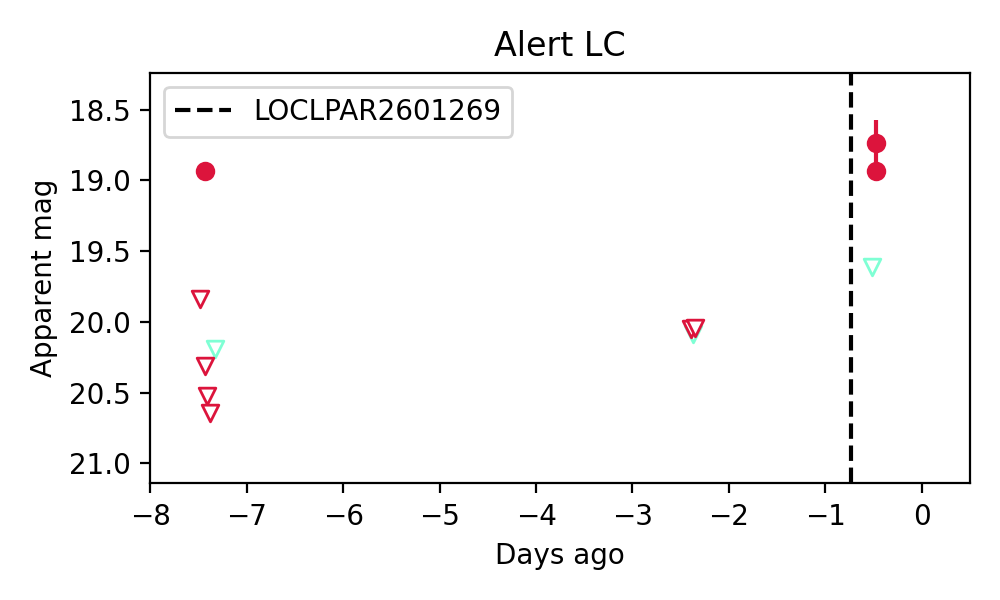

Candidate List 20260127Previous Day Next Day
Section 1: New Sources (age<1d) Section 2: Old (1-5d) sources observed last nightplaceholder
Section 1: New Afterglow/FBOT Cands Last Night (0)
Section 2: Older Sources Observed Last Night (1)
0. ZTF26aadyguf (Afterglow?) [Back to Top] [Share] [Trigger Swift] [Fritz] [Lasair]RA, Dec: 107.89483, -0.8167 7h11m34.76s, 0d-49m-0.13sGalactic (l, b): 215.96079, 4.10631 ext(g-r) = 0.243


TESS: Sectors [ 7 33 87 111]
PS1: 1 source in 3 arcsec Closest: d = 1.22 arcsec photoz=0.03+/-0.01 peak abs mag = -17.56
LegacySurvey: 0 sources in 3 arcsec

Extinction-corrected gr color:
From alerts: 0.46 +/- 99 mag
Rise Rate:
g: -99 mag/day
r: 15.89 mag/day
i: -99 mag/day
Fade Rate:
g: -99 mag/day
r: 38.78 mag/day
i: -99 mag/day